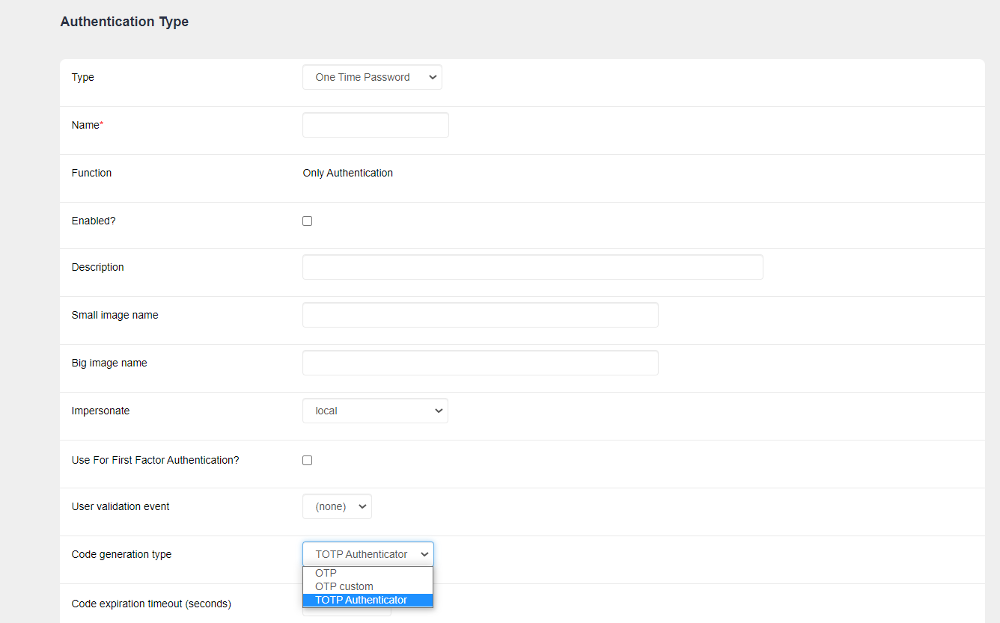
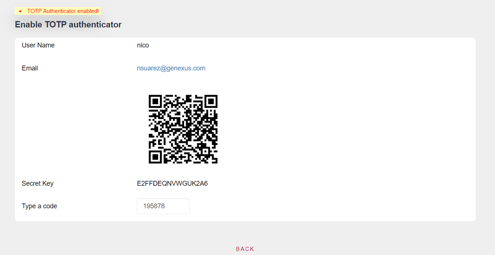

GAM - Time Based One Time Password (TOTP)
Using Time Based One Time Passwords (TOTP) as a method of authenticating users to the system offers the advantage that they do not need to remember a password, since a new code is generated every time they want to log in. In addition, it adds another level of security because the code is valid for a short period of time.
When you add to this the fact that users need an application on their smartphone to obtain these codes—depending on the security of the users’ smartphones—it also adds another level of difficulty in case someone tries to authenticate with a username that doesn’t belong to them.
Time Based One Time Password (TOTP) is an algorithm that generates One Time Password (OTP) keys that use the current time as a source of uniqueness. Therefore, in the GeneXus Access Manager(GAM) TOTP is found as a One Time Password (OTP) Code generation type.

Once this code generation method has been chosen, the following parameters can be configured (the image shows their default values):

- Code expiration timeout: This is the maximum time (in seconds) the user has to enter a code.
- Maximum daily number of codes: Number of times per day that a code can be entered (after clicking on the NEXT button).
- Number of unsuccessful retries to lock the OTP: Number of unsuccessful retries to block access.
- Automatic OTP unlock time: Time for automatic unlocking of OTP codes.
- Number of unsuccessful retries to block user based on number of OTP locks: Number of times OTP codes can be locked before blocking the User.
Configuration of a User's Authenticator app
With this type of authentication, it is necessary for each user to configure an Authenticator (pairing of the user's account with the Authenticator application). To do so, follow the steps below:
- Go to the profile of the user whose Authenticator you want to configure. In the menu on the right, you will find the Enable authenticator button. Note: This button will be visible in user profiles once an authentication type OTP has been created with TOTP Authenticator as Code generation type.
- By clicking on the above button you will be directed to a window similar to the following:
- The selected Authenticator must be used to scan the QR code or use the Secret Key provided to synchronize the Authenticator code generation with the application.
- Lastly, you need to enter a code provided by the Authenticator (on time) in the Type a code field and click on the Enable button. Below is what the screen looks like once this operation has been successfully performed:
Configuration of TOTP as first and second factor
Since One Time Password (OTP) can be used as either first or second authentication factor, TOTP inherits this property. Remember that to define whether you want to use the authentication type as first or second factor, you must take into account the property Use For First Factor Authentication? inside it.
This property is cleared by default; if left unchanged, it generates an authentication type that can be used as a second factor. On the other hand, when this property is selected, it generates an authentication type that can be used as a first factor.
Additional steps: how to configure TOTP as a second factor
Once the TOTP authentication type has been created, another authentication type must be configured that will use the newly configured authentication as a second factor. In this case, for example, Local authentication is set to use TOTP as a second factor.
Once in edit mode, within the authentication type, select the Enable Two Factor Authentication? Property. In Authentication Type Name, select the second factor authentication type previously created.
In addition, two more properties can be modified (in the image, they have their default values):
- First factor authentication expiration: Maximum time the user will have to confirm the second factor, after passing the first factor.
- Force 2FA for all users?: Allows forcing all users to use two authentication factors.
The last step for a user to authenticate using this two factor configuration is to go to the user's profile in edit mode and select the option Enable two factor authentication?
Note: This step is NOT necessary if the Force 2FA for all users? property mentioned in the previous step is selected. Additionally, it should be clarified that if all users are forced, any user who doesn’t have an Authenticator configured will not be able to log in.
Length of the secret key to be generated
The length of the secret key generated by GeneXus for each user can be modified by going to the menu Repository Configuration > Users Tab > TOTP secret key length, as shown in the image below.
- TOTP secret key length: Property indicating the maximum length of the secret key generated for Authenticator applications (16 is the default value).
Considerations
On the iPhone—in particular, for the Google Authenticator application—the password length cannot exceed 16 characters. (ref)
Availability
Since GeneXus 17 Upgrade 8.
See Also
GAM - One Time Password (OTP)
GAM - Time Based One Time Password for mobile
| Backlinks | ||
| GAM - One Time Password for mobile | GAM - Time Based One Time Password for mobile | GeneXus 17 Upgrade 8 |
| GeneXus 17 Upgrade 9 | Toc:GeneXus Access Manager (GAM) |